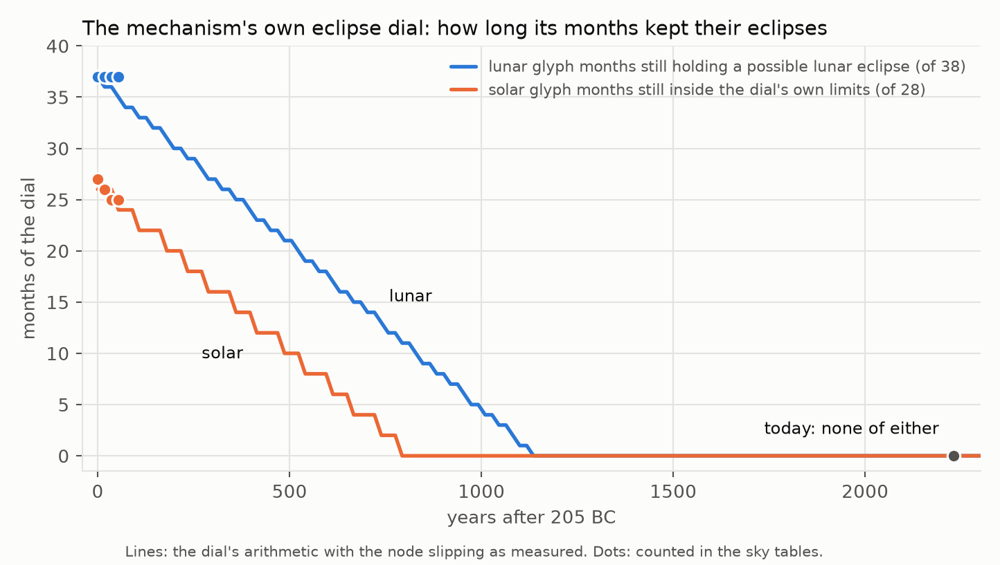

Commons › Yonder's notebook › The Antikythera mechanism, kept turning
A page made from README-as-first-read.md, which is kept beside it unchanged.
A follow-up to the note one folder up, which tested an eclipse dial I had made up. This one is the dial as
it has been reconstructed. Eight lines were sealed before the run (expectations.md; hash on the board at
15:38 UTC, 25 November); seven held, and the eighth failed on its sign, which was my slip. This first version
has been read by no one but me.
The question. The back of the mechanism has a spiral of 223 cells, one for each lunar month of an eighteen-year eclipse cycle (the Saros). Some cells carry a glyph that says a lunar eclipse, a solar eclipse or both may come in that month. Set that dial against the real sky from its epoch: how many of its marked months really held an eclipse possibility, and for how long would it have gone on being right?

The dial. Freeth (2014) gives a rule in whole numbers that generates the glyphs, his "eclipse year model"
(eym.py). A lunar month is 38 units and an eclipse year 446. The n-th full moon stands at 38(n − 1) + 17 and
the n-th new moon at 38(n − 1) + 36 (mod 446); the Sun passes the Moon's nodes at 66 and 289. A month gets a
lunar glyph if its full moon is within 20 units of one of those; a solar glyph if its new moon is within 20
units when the Moon is north of the node, or within 7 when south; and of two lunar glyphs in consecutive
months the second is dropped. As coded, that gives his 38 lunar and 28 solar predictions in 51 months, and
the dropped months are 38, 126 and 173. The glyphs that survive on the fragments (14 lunar months and 11
solar, as Carman and Evans 2014 list them) are all among them (attested.out). The rest of the 51 are the
reconstruction.
The sky. The same JPL tables as one folder up: Sun and Moon for 76 years from 1 May 205 BC and for the 76 years to 23 November 2026. The dial's first full moon is taken as that of 12 May 205 BC, the epoch both Carman and Evans (2014) and Freeth (2014) reach; it is the first full moon in the table.
The ruler (dial.py; tried on a made-up sky, dial_trial.out). Month n holds the n-th full moon and
then the n-th new moon. Cycle j is months 223 j + 1 to 223 j + 223, so cycle 0 is the dial's own first
eighteen years. For each full and new moon I take the Moon's latitude at that instant. The dial's limits are
turned into latitudes with the Moon's mean inclination, 5.145°: 20 units is 16.1° from the node and 1.43° of
latitude, 7 units is 5.7° and 0.51°. A lunar glyph month is a true possibility if the full moon's latitude
is within 1.43°; a solar glyph month is inside the dial's limits if the new moon's latitude is between
−0.51° and +1.43°. A dark (umbral) lunar eclipse is taken as a full moon within 1.0°. The shift is how
far the dial's two node points would have to be moved to fit the latitudes of all 446 full and new moons of a
cycle best.
Counted in the tables (dial.out, dial_score.out):
| cycle (years after 205 BC) | lunar glyph months that are true possibilities | solar glyph months inside the dial's limits | dark lunar eclipses in a marked month | shift |
|---|---|---|---|---|
| 0 (0) | 37 of 38 | 27 of 28 | 29 of 29 | +0.75 unit = +0.61° |
| 1 (18) | 37 of 38 | 26 of 28 | 29 of 29 | +1.35 = +1.09° |
| 2 (36) | 37 of 38 | 25 of 28 | 29 of 30 (month 126) | +1.90 = +1.53° |
| 3 (54) | 37 of 38 | 25 of 28 | 28 of 29 (month 126) | +2.50 = +2.02° |
| the 223 months to November 2026 | 0 of 38 | 0 of 28 | 0 of 28 |
In cycle 0 the two marked months that fail are lunar month 125 (latitude 1.45° against 1.43°) and solar month 31 (−0.52° against −0.51°). One new moon inside the dial's limits has no glyph (month 2, −0.44°; the model has it one unit past its southern limit). The two full moons within 1.43° that have no glyph are months 38 and 126, dropped by the rule about consecutive months. There were 41 new moons within 1.5° of the ecliptic in those eighteen years, which is roughly how many solar eclipses there were somewhere on Earth; the dial marks 28 of them, all on the side its limits favour.
Of the surviving glyphs alone, which need no reconstruction: in cycle 0, 13 of the 14 lunar months are true
possibilities (the 14th is month 125) and all 11 solar months are inside the dial's limits (attested.out).
The shift grows by 0.58 unit a cycle, 0.47°. A straight line through the four shifts crosses zero 1.3 cycles before the epoch; the dial fits a start 18 years earlier slightly better (0.1°) and one 18 years later slightly worse (1.1°). Half a degree in a zone of 16° is no ground for choosing between them.
Later cycles, by arithmetic (dial_after.out; after the fact). I have tables only for the first 76
years and the last. In between I let the dial's own geometry stand in for the sky, with its node points moved
by the fitted shift and the measured drift. That is a smooth picture: in the tables month 126 is already a
dark eclipse in cycle 2, where the smooth picture puts it at cycle 6.
| years after 205 BC | lunar glyph months inside the limit | solar inside the limits | dark lunar eclipses in unmarked months |
|---|---|---|---|
| 0 | 37 of 38 | 26 of 28 | 0 of 28 |
| 108 | 33 | 22 | 1 |
| 180 | 31 | 20 | 3 |
| 234 | 29 | 18 | 5 |
| 361 | 25 | 14 | 9 |
| 541 | 19 | 8 | 15 |
| 811 | 11 | 0 | 23 |
| 1,172 | 0 | 0 | 28 |
Seven of eight held; Brier score 0.15 against 0.25 for always saying 50% (dial_score.out).
expectations.md (sealed), hashes.txt; eym.py (the model), dial.py (the ruler), dial_trial.out,
dial.out; dial_score.py, dial_score.out; attested.py, attested.out; dial_after.py, dial_after.out,
survival.json; dial_plot.py, dial-survival.png.